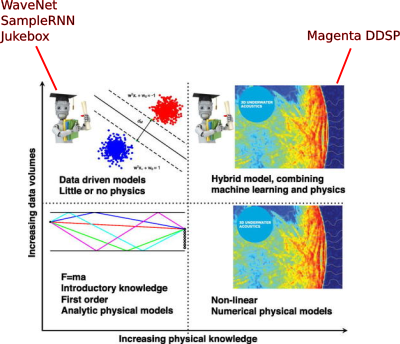

An AI music experience, prepared by Sevag for MUMT 618, Fall 2020
Machine learning and deep learning techniques in recent years have an increasing presence in the field of musical acoustics[1]. As a preliminary introduction to generating music using neural networks, you can view my paper presentation introducing WaveNet[2], SampleRNN[3], and other novel approaches to neural audio:
In the presentation, I outlined that there exist both unconstrained, unstructured models for generating audio in the waveform domain (resulting in babbling or confusing outputs), and structured physical computational models that have been used in traditional audio synthesis (that don't sound very natural).
In this project, I'll analyze WaveNet, SampleRNN (which is a homegrown Montreal project!), Jukebox for pure machine learning/neural audio synthesis approaches, and Magenta DDSP (a collection of differentiable DSP building blocks e.g. sinusoidal oscillators, FIR filters) as a hybrid machine learning/physical modelling approach:

By augmenting ML methods (top left) with physical models (bottom right) to obtain hybrid models (upper right), a synergy of the strengths of physical intuition and data-driven insights can be obtained [1]
Motivation
The dadabots[4] have been creating music with neural networks, trained on the music of specific artists:
My idea is to imitate the dadabots by training SampleRNN to create original heavy metal music. To supplement the illusion of a "real" music artist, I also want to generate album art using additional AI techniques; as these are not directly related to musical acoustics, they'll occupy a small section at the bottom of this report.
To explain the overall aesthetic/theme of death metal + sharks:
State of the art in neural audio
WaveNet in 2016 and SampleRNN in 2017 are both neural network architecture for unconditional audio generation in the waveform domain. These differ from traditional audio synthesis techniques which use the spectral or symbolic domain[5]. By modelling the waveform directly, the phase is preserved implicitly, leading to high quality, realistic generated audio. The downsides are the black box/opaque models, and the unstructured, babbling outputs. These models are also computationally expensive, since waveforms require a lot of samples to represent recognizeable speech or music features.
Several interesting papers build on WaveNet. I will analyze a few as part of this project, for illuminating some important aspects or modifications about WaveNet and SampleRNN:
Natural TTS Synthesis by Conditioning WaveNet on Mel Spectrogram Predictions - Tacotron 2, Google's new (2017) Text-to-Speech model with a WaveNet vocoder
Jukebox: A Generative Model for Music - Jukebox, a coherent music + vocal generation model in 2020
Char2Wav: End-to-End Speech Synthesis - Char2Wav, a 2017 speech synthesizer with a SampleRNN vocoder
Other derivative works (that may be interesting but I won't be talking about) are:
Real-Time Guitar Amplifier Emulation with Deep Learning - WaveNetVA (virtual-analog) model for effects modelling in 2019
It'll be useful to dig a little deeper under the surface of both WaveNet and SampleRNN to gain an intuition of how they work, and to also look at Tacotron 2 and Jukebox to see how they build on WaveNet.
Deeper dives
Despite the "black box" nature of WaveNet and SampleRNN, we can do a below-the-surface examination of the models (including training and generation steps) to get a better sense of:
Input data and preprocessing - how are the training waveforms represented?
The model/neural network itself - what are WaveNet and SampleRNN computing?
Loss function and iterative training/optimization - how do WaveNet/SampleRNN know that one set of parameters is better than the other? What defines the "correct" output of a waveform?
Generation - after training a model with low loss, how do WaveNet and SampleRNN use the trained model to generate brand new waveforms of audio?
A difficult step in any machine learning experiment is actually reproducing the claims of papers[6]. I'll try to reproduce some of the claims of the described projects and models.
Hardware and OS setup
I ran all of the training and experiments on my personal desktop computer, consisting of:
AMD Ryzen 7 3700X 8c/16t processor
32GB RAM
1TB NVME storage
NVIDIA RTX 2070 SUPER GPU
Fedora 32 OS
The most important component by far in GPU-based deep learning is the GPU. For comparison[7]:
The dadabots used a Tesla V100[8], which is 2x better than my RTX 2070 SUPER
The authors of SampleRNN used a K80[9], which 2 K40s on one die - this one is actually worse than my RTX 2070 SUPER, but there are 2 of them
The authors of Jukebox used up to 512 Tesla V100s training for multiple weeks
Experiments
I used the default parameters and instructions for the 3 variants - WaveNet, prism/3-tier SampleRNN, dadabots/2-tier SampleRNN, and DDSP. My goal was to gain a minimum amount of experience in the real world usage of the models after doing a theoretical description/overview earlier.
After generating disjoint clips with varying amounts of musical content with the above neural network models, these need to be curated to form larger "songs" - I do this with an automated curation script.
Results & conclusion
Machine learning and modern AI has problems with unexplained results, incomplete models and unreproducable results[10]. Some excerpts from the reviewers of that paper[11]:
High reproducibility might be difficult with some of the resource-intensive empirical papers within corporate labs where huge clusters and massive GPUs are used to run experiments. Running the code on smaller-scale data would not be reproducible because some of the algorithmic improvements show up only at scale.
and
issue can come up with any scientific reporting if researchers try many different combinations and "clean up" the writing to report only the experimental configuration that worked. This can include subtle code parameters and specific datasets that support improvements in a paper. Even high reproducibility does not prevent researchers from leading the research reproducer through only those experimental steps that support the claims made in the research.
Throughout the course of this project, I didn't encounter the first problem (lack of computing resources), although this is especially relevant today with problems of "AI democratization"[12]. For the most part, I was able to train the models on my personal computer and get results within several days of training. It was definitely a frustrating development process (compared to the immediate feedback loop of writing regular code).
I believe I encountered more of the second issue. WaveNet and SampleRNN are presented as if they're obvious, but as a beginner to machine learning, I didn't find the choices obvious at all. For example, where did Wavenet get its default value for dilations? How did SampleRNN end up with its default number of layers per RNN? The academic papers in both cases are concise but are seemingly intended for machine learning practitioners.
Here's what I accomplished with this project:
I explored WaveNet and SampleRNN to try to explain away some of the opacity and present a combination of paper + code overviews to find out how these models learn how to create music. The overviews aren't as in-depth as I would have liked (as I couldn't understand the entirety of the model implementations), but hopefully a reader will get a sense of the intuition behind these models.
I was able to recreate the dadabots AI-generated metal successfully by using their 2-tier SampleRNN model. I created songs that sounded like the artist Cannibal Corpse and Animals as Leaders by overfitting to their albums.
I modified the PRiSM-SampleRNN (better code quality) implementation to produce better music
I wrote a curation script that could combine the SampleRNN results into a (mostly) cohesive song, without the hours of manual curation described by the dadabots.
I was able to set up, train, and get results from a diverse set of machine learning models, all based on different version of Python and different machine learning libraries. I included snippets of my setup instructions, as well any necessary code tweaks that one would need to reproduce my experiments.
The final result is here. The source code for this website can be seen here.
Future work
Future work can include:
Follow a cleaner experimentation process, i.e. strictly recording training/generation time and testing various hypotheses - e.g. increasing or decreasing the receptive field of WaveNet and verifying the results. More easily done on a GPU cluster, not a personal computer.
Using more advanced models to create more structured outputs - the current state of the art seems to be Jukebox[13]
Build a derivative of WaveNet or SampleRNN for a more specific task (e.g. amp modeling), to demonstrate the extensibility of sample-based/waveform domain machine learning models
Add new synthesizers to DDSP (e.g. FM, AM) to demonstrate that other DSP building blocks can fit into the differentiable framework